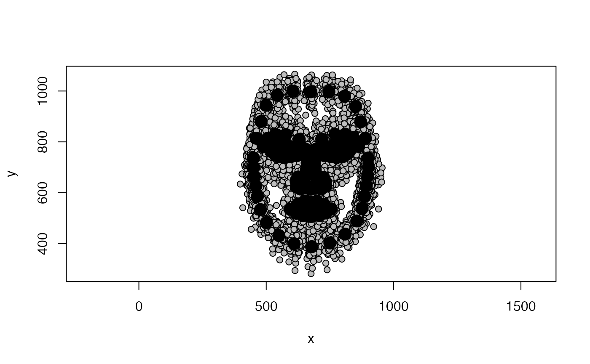

NEEDS REWRITING AFTER FUNCTION CHANGES
This tutorial will demonstrate how to convert Webmorph delineation files into the .tps format using the function convertTEMtoTPS. TPS is a commonly used file format in geometric morphometrics that can be read by packages such as geomorph.
This example uses the freely available Face Research Lab London Set. Download delineation (and image) files for a set of 102 neutral images by clicking here. Rename the downloaded folder to tem and put it in your working directory.
convertTEMtoTPS functionThe function takes the following arguments:
path_to_tem: The path to the template files you want to convert
p: The number of delineated landmarks
image_height: Height of delineated images (in pixel)
del: Any landmarks that should be removed during the conversion. Input can be single number or vector. If no value is provided, all landmarks are retained
path_to_tps: Name and path of TPS file that will be created
path_to_tem
If you saved your template files in a sub directory of your working directory called tem, the path would simply be path_to_tem = "./tem".
p
p is the number of landmarks. The default landmark template on Webmorph uses 189 landmarks, so for this example p = 189.
image_height
Owing to its Java roots, Webmorph’s coordinate system has its origin on the top left. This means that if you try to import .tem files into other software such as R, templates will appear upside down.
convertTEMtoTPS will flip Webmorph templates upside down by subtracting all y-coordinates from the image height in pixel. For the London Set, image_height = 1350 pixels.
del
You might not want to retain all of the landmarks the FRL default template uses for shape analyses. For example, the “halo” points are incredibly useful in creating visually sharp composite faces, but are not “fixed” landmarks (REF). For this example, we will remove the following landmarks:
| Landmarks | Number |
|---|---|
| Under eye | 44-49 |
| Lower lip | 99-103 |
| Ears | 115-124 |
| Halo | 145-157 |
| Smile lines | 158-163 |
| Cheeks | 164-169 |
| Philtrum | 170-173 |
| Chin | 174-178 |
| Neck | 183-184 |
We can define which landmarks to exclude by creating a vector that contains the number of every landmark to be deleted. Note that Webmorph starts counting at 0 - you will have to add +1 to each landmark!
If deleting multiple landmarks, it’s easier to save all the landmarks in a vector instead of typing them into the function; for the current example, this would look like:
del <- c(45:50, 100:104, 116:125, 146:158, 159:164, 165:170, 171:174, 175:179, 184:185)
path_to_output
Specifies where you want your TPS file saved, and how it should be named, e.g. path_to_tps = "./LondonSet.tps"
Now, we have everything we need to convert our template files!
convertTEMtoTPS(path_to_tem = "./tem", p = 189, image_height = 1350, del = del, path_to_tps = "./LondonSet.tps")
We can check if everything worked the way we expected by using geomorph to load and plot data
data <- readland.tps("./LondonSet.tps", specID = "ID", warnmsg = FALSE)
plotAllSpecimens(data)
